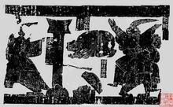

荆轲刺秦
参见：荆轲刺秦、图穷匕见
十二金人
秦始皇统一六国后为防止人民反抗而尽收天下之兵所铸成之十二个大铜人像。据传是秦始皇用来防止金属流通，收集天下金属所铸，也有传说是秦皇用大禹九鼎所铸。
结识外星人
据史书记载，秦始皇时期与天外之民有过接触，从他们那里学来了铬金属镀到青铜剑上的铸造技术。
跑马修金堤
参见：秦始皇跑马修金堤
封禅泰山
参见：秦始皇封禅泰山、泰山封禅
大怒湘君
有一次秦始皇出巡时，在湘山祠遇到大风，几乎不能渡河。秦始皇问博士（当时的一种官职）说：“湘君是什么神？”博士回答说：“听说是尧的女儿，舜的妻子，埋葬在这里。”秦始皇对这个湘君非常生气，认为是在故意与他作对，就派人把湘山上的树全部砍光。因为当地是红土，湘山也变成了红色的秃山。
荧惑守心
荧惑守心指的是一种天文现象，“荧惑”是指火星，由于火星荧荧似火，行踪捉摸不定，因此古代称它为“荧惑”。但火星被认为是战争、死亡的代表。秦始皇三十六年（前211年）时期，就出现了，史书记载有颗陨星坠落在东郡，落地后变为石块，老百姓有人在那块石头上刻了“始皇帝死而土地分。”始皇听说了，就派御史前去挨家查问，没有人认罪，于是把居住在那块石头周围的人全部抓来杀了，焚毁了那块陨石。
今年祖龙死
秦始皇三十六年（前211年）深秋的一天，秦始皇还在迅游，前面忽然出现一个陌生人，拦住马车。这人手里拿了一块玉璧，不声不响地塞给使者。使者狐疑接过，未及开口，对方就抢先说了一句话：“今年祖龙死”！掷地有声。使者吓得够戗。“今年祖龙死。”祖，就是始祖，人之先；龙，君之象。意思是说今年秦始皇要死。陌生人撂下这句石头般冷硬的话，掉脸儿飞快走掉，使者回过神再想找，人早已不知去向。
阿房、阿房，亡始皇
“阿房、阿房，亡始皇。”这押韵的流行小调，流传于秦始皇二十六年（前221年）。当时，百姓民夫修筑阿房宫，负担沉重。这条口号无疑是民众的心声。
亡秦者胡也
秦始皇让卢生四处求访神仙，他从海外带回图书，说“亡秦者胡也”。秦始皇以为“胡”是胡人，派三十万人北去击匈奴。却没想到的是秦朝在他儿子胡亥手里灭亡的。